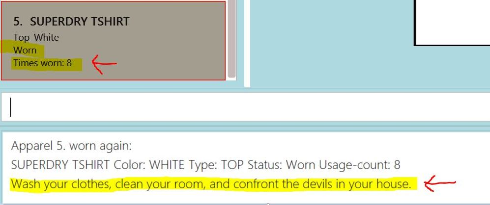
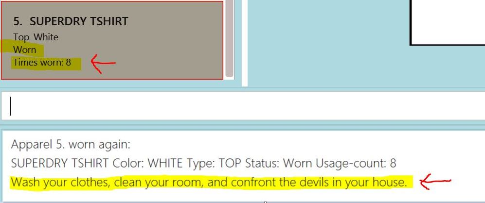

Overview
Fashion Match is a desktop wardrobe management application used as a guide for your fashion necessities. The user interacts with it using a CLI, and it has a GUI created with JavaFX. It is written in Java, and has about 19.7 kLoC.
Summary of contributions
-
Major enhancement: added the ability to make wash and wear certain apparels.
-
What it does: allows the user to indicate whether an apparel’s is clean or worn.
-
Justification: This feature improves the product significantly because it similates the wardrobe and the laundry basket; if clean, it is hanging clean and has not been worn; if worn, it has been put in the laundry basket.
-
Highlights: This enhancement affects existing commands like the recommendation class of commands and the statistics commands. It required an in-depth analysis of the n-level design architecture in ab4. The implementation too was challenging as it required changes to existing commands, and is modelled after the EditCommand.java class.
-
Credits: none, as i simply had to model the WashCommand.java and WearCommand.java classes after EditCommand.java class
-
-
Minor enhancement: Learnt CSS and HTML for CS2103 to take charge of the UI Design aspect. Raffles did the back-end code, i was in charge of user experience. I did the front end, adjusting the fonts and the anchorpane settings, and choosing the right colours finding the right hexcode values for our app.
-
Used photoshop skills to remove background white image from jpg image. Resized images. Did this for all 64 of tops, bottoms, belts, and shoes images in the our resources/images folder. Tedious work but worth it.
-
Commissioned my artist friend to do the default image seen when Fashion Match first loads up. Titled firstpage.png in resources/image folder.
-
-
Code contributed:
Wash command: Functional code
Wear command: Functional code
Parser for available command: Functional code
Parser for unavailable command: Functional code
Wash command test: Test code
Wear command test: Test code
Stub class: Test code
Stub class: Test code
Stub class: Test code
-
Other contributions: Created 2 classes for testing: AvailableCommandTest.java, UnavailableCommandTest.java and 3 other classes as stubs for dependency injection: CommandTestUtilExtra.java, AvailableApparelDescriptorBuilder.java and UnavailableApparelDescriptorBuilder.java
-
Project management:
-
Managed release of
v1.2, reviewed and merged all PRs from week 8 wednesday - week 10 friday on GitHub
-
-
Enhancements to existing features:
-
Updated the apparel UI card to display the availability status and its usage count. (Pull requests #1, #2)
-
Created 5 classes. 2 for testing: AvailableCommandTest.java, UnavailableCommandTest.java and 3 other classes as stubs for dependency injection: CommandTestUtilExtra.java, AvailableApparelDescriptorBuilder.java and UnavailableApparelDescriptorBuilder.java (Pull requests #1, #3)
-
-
Documentation:
-
Community:
-
Contributions to the User Guide
Given below are sections I contributed to the User Guide. They showcase my ability to write documentation targeting end-users. |
Wash command:
Washing a piece of apparel : wash or available
Makes an existing listed apparel available.
Format: wash INDEX or available INDEX
Examples:
-
wash 5
Resets cleanliness status of the fifth apparel in the list if it was worn.
-
wash 5
Does not allow cleaning if the fifth apparel in the list is already clean.
Wear command:
Wearing a piece of apparel : wear or unavailable
Makes an existing apparel in FM worn and increases times worn by 1.
Format: wash INDEX or unavailable INDEX
Examples:
-
wear 5
Sets status of the fifth apparel in the list to 'Worn'. Increases its times worn by 1.
-
wear 5
Sets status of the fifth apparel in the list to 'Worn' even if it’s already worn. Increases its times worn by 1. One of the seven random messages shown below. 

Contributions to the Developer Guide
Given below are sections I contributed to the Developer Guide. They showcase my ability to write technical documentation and the technical depth of my contributions to the project. |
Wash command:
Wash feature
Reset apparel status to clean if previously worn.
Simulating an event in the real world where send your clothes to wash.
3.1.1. Current implementation - Wash a single indicated apparel
The wash command takes in only one parameter:
-
Index: Index number of an apparel in filtered/unfiltered list. Only positive numbers present in list are valid.
e.g wash 1

When the user inputs the wash command in the CLI, the input is parsed, and the index of the apparel specified are tokenized and extracted.
wash keyword will call a constructor for WashCommandParser to parse the index, 1, creating a WashCommand for LogicManager.
LogicManager executes WashCommand which calls Model to set the apparel in the list to clean, and commits the changes to Storage.

The CommandResult object that is returned by the wash command lets the user know that the status of the apparel has been reset to clean or that it is already clean.
3.1.2. Design Considerations:
-
Alternate command word:
available 1works the same and is identical towash 1
Pros: Gives the user a choice and a more intuitive approach to wardrobe management
-
Input: Not allowing user to wash an already-clean Apparel again.
Pros: Reminds the user that his apparel is already clean if user absentminded types command.
Pros: Saves CPU time as it is not commiting to Addressbook. Throws exception instead.
3.1.3. Proposed additions for v2.0:
A washAll command to simulate throwing all your dirty clothes into the washing machine.
Wear command:
Wear feature
Sets apparel status to worn whether its previous status was clean or worn and increases usage count by one.
Simulating an event in the real world where throw your worn clothes to the laundry basket
3.2.1. Current implementation - Wear a single indicated apparel
The wear command takes in only one parameter:
-
Index: Index number of an apparel in filtered/unfiltered list. Only positive numbers present in list are valid.
e.g wear 1

When the user inputs the wash command in the CLI, the input is parsed, and the index of the apparel specified are tokenized and extracted.
wear keyword will call a constructor for WearCommandParser to parse the index, 1, creating a WearCommand for LogicManager.
LogicManager executes WashCommand which calls Model to set the apparel in the list to worn, and commits the changes to the Apparel to Storage.

The CommandResult object that is returned by the wear command lets the user know that the status of the apparel has been set to worn and returns and random message if the indicated apparel was already worn before command was executed.
3.2.2. Design Considerations:
-
Alternate command word:
unavailable 1works the same and is identical towash 1
Pros: Gives the user a choice and a more intuitive approach to wardrobe management
-
Input: Allowing user to wear an already-clean Apparel again.
Pros: Simulates the real world where people might not have time to wash their clothes due to bad time management and instead throws on the next thing in the wardrobe.
3.2.3. Proposed additions for v2.0:
A wear command that takes in multiple INDEXs to simulate wearing a whole outfit out. e.g. wear 1 2 3 to wear Apparel no. 1, 2 and 3.